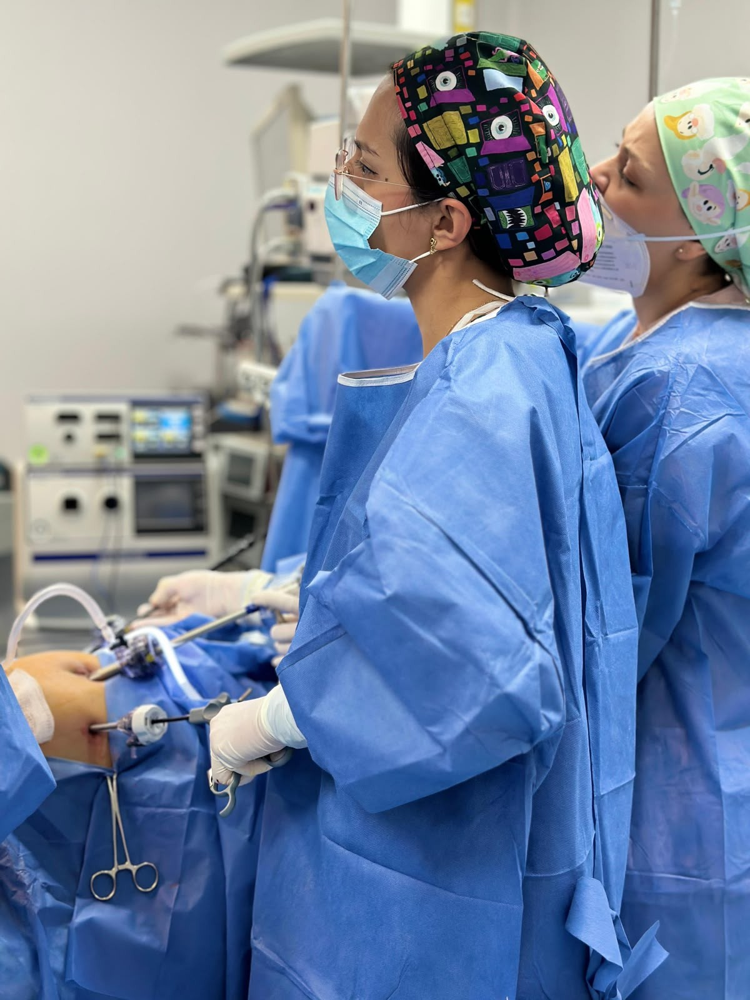
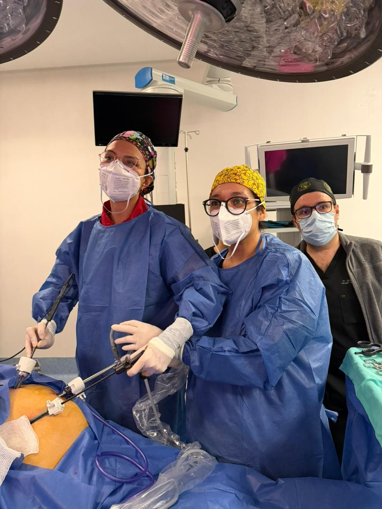

◯
Vesícula
Cálculos, cólico biliar, colecistitis y valoración para colecistectomía.
Cirugía de vesícula →Valoración de vesícula, hernias, apendicitis y otros padecimientos abdominales, además de panendoscopia y colonoscopia cuando están indicadas.

Cirujana General · Laparoscopista · Endoscopista
Estas situaciones son ejemplos frecuentes. No sustituyen una valoración ni significan por sí solas que necesites cirugía o endoscopia.
Con o sin antecedente de piedras en la vesícula.
Pared abdominalBulto o molestia en ingle, ombligo o cicatrizValoración de posible hernia.
Atención prioritariaDolor abdominal que progresaEspecialmente si se acompaña de fiebre, náusea o vómito.
Tubo digestivo altoReflujo, dificultad para tragar o sangradoLa indicación de endoscopia depende del contexto clínico.
ColonSangrado, anemia o cambios persistentes al evacuarAlgunos cuadros requieren estudio endoscópico.
PrevenciónValoración para detección de cáncer colorrectalLa estrategia depende de edad, antecedentes y nivel de riesgo.
Cada página explica cuándo suele solicitarse una valoración, cómo se estudia el problema y qué puntos deben discutirse antes de un procedimiento.
Cálculos, cólico biliar, colecistitis y valoración para colecistectomía.
Cirugía de vesícula →Hernia inguinal, umbilical, ventral o sobre una cicatriz previa.
Cirugía de hernia →Valoración de dolor abdominal agudo y manejo quirúrgico cuando se confirma.
Apendicitis →Evaluación de padecimientos intestinales con posible indicación quirúrgica.
Cirugía general →Evaluación endoscópica de esófago, estómago y duodeno.
Panendoscopia →Estudio del colon, toma de biopsias y manejo de lesiones seleccionadas.
Colonoscopia →Detección y resección endoscópica cuando el tamaño y las características lo permiten.
Pólipos de colon →Dolor abdominal y otros cuadros que pueden requerir atención hospitalaria.
Contacto →Cirujana General · Laparoscopista · Endoscopista
La consulta debe permitir entender qué está ocurriendo, qué estudios realmente aportan información y qué alternativas existen antes de decidir un procedimiento.
Se revisan el motivo de consulta, antecedentes, exploración y estudios disponibles.
Se define si se necesita vigilancia, estudios adicionales, endoscopia, cirugía u otra valoración.
Si se realiza un procedimiento, se establecen cuidados, signos de alarma y revisiones posteriores.

Médica Cirujana por la Facultad de Medicina, UNAM; Especialista en Cirugía General en el Hospital General “Dr. Manuel Gea González” y con Alta Especialidad en Cirugía Endoscópica.
Puedo ajustarme al tabulador de cualquier aseguradora. La cobertura, deducible, coaseguro, red hospitalaria y autorización final dependen de cada póliza y procedimiento.
Se integra diagnóstico, plan, estudios y documentación necesaria para iniciar el proceso con la aseguradora cuando corresponda.
La autorización final corresponde a la aseguradora. Antes de publicar logotipos, se confirmarán las compañías con las que efectivamente se trabaja.
Si ya tienes estudios o un diagnóstico previo, puedes llevarlos a la consulta para revisarlos en contexto.
Ubicación pensada para búsquedas locales y para conectar posteriormente el sitio con Google Business Profile.